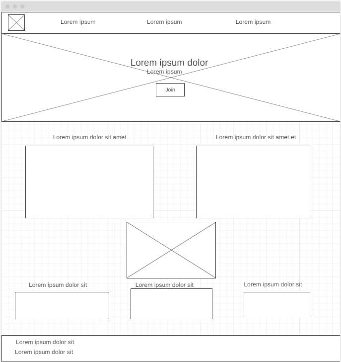
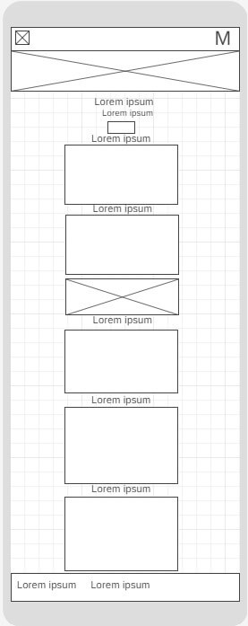

Reason for Selection
Curitiba, the capital of Paraná, Brazil, is a major economic hub known for its innovative urban planning and strong business community. This site plan is dedicated to promoting the interests of Curitiba's business sector and supporting local commerce.
Overview
Site Name: Curitiba Chamber of Commerce
This name represent the city where companies operate to look for their interests
Purpose
The purpose of this site is to provide comprehensive information about economic development, community events, and resources that support local businesses. It also aims to facilitate membership in the chamber and offer detailed information about the companies that are part of the chamber.
Scenarios
- What events will the chamber be holding this month that promote business-to-business networking?
- What resources are available for new businesses in Curitiba?
- What has been the population growth and economic trends in the region?
Style Guide
Color Scheme
Palette URL:
https://coolors.co/palette/2a9d8f-e76f51-264653-f4a261-2b2d42| Primary | Secondary | Accent 1 | Accent 2 |
|---|---|---|---|
| [#2a9d8f] | [#e76f51] | [#264653] | [#f4a261] |
Typography
Heading Font: Lora
Paragraph Font: Roboto
Normal paragraph example
The Curitiba Chamber of Commerce serves as a vital resource for local businesses, providing essential information, support, and networking opportunities to help them thrive in the community.
Colored paragraph example
This paragraph demonstrates the use of the primary color from the selected color scheme, making it stand out for emphasis.
Navigation
Wireframes
Home
Desktop Homepage Wireframe
Mobile Homepage Wireframe
